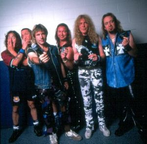
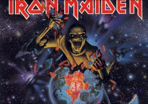

Iron Maiden
 De: La Frikipedia, la enciclopedia extremadamente seria.
De: La Frikipedia, la enciclopedia extremadamente seria.
De la serie Grupos musicales:
ejemplar alemán, como del siglo XIV (creo que era por ahí...)
«Irooooooooooooooon Maideeeeeeeeen»
~ Guybrush Threepwood al ver una doncella de hierro
«wahhhwaahhhhtraannntrarararnwahhhh»
~ Dave Murray haciendo un solo de guitarra
«Hizo volar un auto sobre mi con su rayo laser»
~ Fan de Iron Maiden despues de un solo de Dave Murray
Este grupo formado en los calabozos de inglaterra es conocida como uno de las mejores bandas para jevis del universo. sus canciones han sido inspiración para los más grandes dictadores de la historia y ademas su canción "out of the silent hill" te explica el secreto para enfrentarte a Diox pero sacando el truco se te destruye todo con uno de esos flashes de los hombres de negro y vuelves en el tiempo sin darte cuenta un segundo...un segundo...un segundo...un segundo...obviamente estoy jugando con tu mente por si no lo sabes.
Miembros
- Bruce Dickinson Pollaenhijo: Es el actual voca-lista,tiene una voz talega se dice que le robó el talento a luciano pavarotti, pero fue desmentido...espera,...no fue desmentido. Estuvo antes en Pajamson pero el mánager de maiden se lo robó y después de tratar de pajearlo, bruce aceptó.
- Nicko Mc Cerebro: Es el baterista de Iron; son muy sabidas sus mañas con el payaso ronald, donde le cortaron el cerebro ya que antes se llamaba nico mc "brain" que en verdad no es así, es por su oso de peluche.
- Dave Murray: el dios de la guitarra y tiene cara de manzana.
- Janick Gers: se vuelve majara en los conciertos y mas de una vez ha tenido que ser hospitalizado.
- Adrian Smith: ASAP y se llama Frederik ¿que no?.
- Steve Harris: El que fundó la banda.
- Eddie: Es el miembro mas importante y el mas conocido. Se fué a la tierra de la imaginación de Southpark y un doble lo suplantó en su rol en Maiden, cuenta la leyenda que escapo de la tierra de la imaginación una vez que Estados unidos lanzó un misil al muro de Pink Floyd, donde se cree que escapo para no volver y ahora se le ha visto por ahí haciendo travesuras en el Medio Oriente.
Ex Miembros
- Paul Di'Anno: primer cantante de maiden, le echaron por su olor familiar(que era olor de ano por eso su apellido) y por las drogas.
- Blaze Baile: Llegó después de Bruce Dickinson y se retiró para conseguir un empleo en las series de Sónic(Blaze)
- George W. Bush: Bajista en algunas canciones del grupo en un principio trató de ponerle Irak maiden al grupo pero Eddie se lo comió(lo cual provoco problemas intestinales)
- Monglomery Burns: Fue batero del grupo en los primeros 3 "discos". Su mamá no paraba de mandarlo a a hacer tareas innecesarias, y por esa razón, lo echaron pa fuera. Mas encima le dio la esclerosis multiple y quedó pa la caga.
Historia
Iron Maiden es una banda formada por un motoquero llamado Steve Harris, creado por SATANAS II al principio, SATANAS II había creado a Steve integrándolo con el chip del Sony Ericson T226 para que limpiara las gracias de su amo y le ayudara en su plan para dominar el mundo. Tiempo después, Steve recibió un bajo de regalo de cumpleaños por haberse portado bien. En realidad pidió una batería, pero su casa era demasiado pequeña, y aunque suene a chiste es verídico. Él compuso canciones más heavys que la muerte en su bajo nuevo, hasta que dejó de limpiar la caca de SATANAS II por tocar el bajo todo el día. Así, SATANAS II se dió cuenta que podía manipular a Steve para que dirigiera un ejército de personas, bajo el nombre de "Jebis", para ello utilizó el chip del Sony Ericsson W300, así pudo formar una banda en compañía de Paul di Anno, otro motoquero con unas matas de cabello dignas de admiración; y con David Murray para hacer algun solo que otro. Así, se forma la banda Iron Maiden.
El nombre
El nombre de la banda primero iba a ser el dolor di ano, pero era demasiado fuerte en su alto contenido de caca, después G.W.Bush quiso ponerle irak maiden hasta que Eddie... ustedes saben que le hizo Eddie, finalmente con el trauma sexual feminista de uno de los integrantes(no diré cual) escogen Iron Maiden que significa la doncella de hierro;este fue el nombre del grupo feminista posterior al ku klux clan.
Un año después Pep Toni Gorrió Caragol Bombilla Pila de Petaca demanda al grupo alegando que "se debe dejar a las bestias tranquilas, pues son una especie en peligro de extinción, y mucho menos se debe dar su numero de teléfono (Ya que por si no lo sabíais, si se invierte la canción y se reproduce a la velocidad del sonido, se puede escuchar claramente una combinación de números, y por eso el titulo de la canción, el Numero de la Bestia)". Pep Toni Gorrió Caragol Bombilla Pila de Petaca ganó en el juicio, y los Irons fueron condenados a 47,8 segundos de carcel. Después de su larga y ardua condena, se vengaron matando a Pep Toni Gorrió Caragol Bombilla Pila de Petaca. Fueron juzgados, aunque el juez les dejo libres alegando que "lo hicieron por el bien de la comunidad". Más tarde Pere Alfonso Gorrió Caragol Bombilla Pila de Petaca anunciaría en una rueda de prensa que se vengaría de ellos. Más tarde le llamaron Marilyn Manson, y debido a las drogas y el alcohol olvidó su sed de venganza.
Eddie
Artículo principal: Eddie
Edward The Great, conocido entre sus amigos como Eddie o por sus fans como Eddie la mascota apocalíptica, es el miembro más conocido de la banda, ya que según encuestas afirman que Eddie es guapo, inteligente, fuerte, atractivo, tierno, sensual, lindo, etc, por eso y otras razones Eddie se ha catalogado como uno de los iconos sexuales más importantes de la historia, además de ser gran amigo de SATANAS II y poseedor de un video porno en Internet
Circula un rumor que dice que es hermano de Nicco Mcbrian, batería de la banda con el cual guarda un gran parecido.
La historia de Eddie comienza por la gira de Iron Maiden en Egipto cuando les cayó un tumba en la que salio Eddie y SATANAS II lo volvió a la vida y así poder vengarse de Iron Maiden por tocar canciones del inframundo como the number of the beast asi que Eddie les muerde las pelotas y se la pasa jodiendolos todos los conciertos y la unica forma de que se calme es tocando the number of the beast o a las 11:58 pm tocar two minutes to midnight asi pueda regresar al inframundo a tocar con hades(el calvo de herculo, no confundir con el calvo tetraplejico de los x men)
Bueno eso o es el Amigo imaginario de Steve Harris.
 E aqui a los miembros de la banda
ofreciendote unos porrillos (fijense en la cara de
harris i de
nicko,en actitud de
flogger)
A lo largo de la carrera de Iron Maiden eddie ha sufrido varias transformaciones en sus discos como son:
- Eddie Egipcio
- Edie loco
- Eddie titiritero
- Edi Militar
- Eddie-Arbol (resultado de querer aparearse con los arboles)
- Eddie Muerto
- Eddy Vivo despues de Morir
- Eddie Politico
- Eddie Mounstro espacial
- Eddie jugete sexual
- Eddie Asesino
- Eddie Piloto
- Eddie zombi
- Eddie Esqueleto
- Ed, Edd y Eddie
- Eddy Calvo
- Eddy Soldado
- Eddie Enfermo Mental
- Edie Masacrador
- Eddie sexopata
- Eddy si-vorg
- Eddie Terminator
- Eddie La Muerte
- Eddi Nube fea
- Eddie Demonio Alado
- Eddie Corredor de autos
- Eddie Pedofilo (en todos los discos)
- Eddie Rey
- Eddie Jinete
- Eddie Icaro
- Eduardo el Grande
- Eddy Norris
La música
A diferencia de otros músicos como Metallica que consiguieron su habilidades musicales vendiendo su alma al diablo (Acordemonos que son unos vendidos), los Maiden fueron creados por SATANAS II con el chip del Nokia 6600 de serie que les permitía componer melodías polifónicas. Es así como son capaces de componer sus canciones, que aparentemente sólo son mierda música, pero en verdad son comandos y ordenes para que los Jebis sepan que hacer cuando llegue la batalla final.
Discografía
- Yonki maiden(mejor canción: the porton of the tekila)(en realidad les gusta el pulque pero es un tributo a el gallo de oro]
- Al-Quilers(mejor canción: Manterquillers)´(narra una experiencia de harris con unos hot cakes... solo dire que termino en SeXo)
- 665 + 1 (TNotB) The Number of the Best(mejor canción: Hallowen pronto llegara)(este es el cumpleaños de eddie), El Numero de la bestia (Este era el numer de Eddie para llamarlo por su cumpleaños)
- A pizza of mint (estos ingleses le echan menta hasta a la pizza)(mejor canción:the moopets)(tributo a la rana rene)
- Sexualslave (la faceta mas oculta de Harris)(mejor canción: Aces Down (esta narra de una partida de poker entre Eddie y hitler)
- Somewhere tea time (my dear)mejor canción: deja-tu)(smith es un ladrón y el le dijo esas palabras cuando le trató de robar el bajo a harris,( en aspaña el disco se llama "Querida, creo que estoy en alguna parte en el tiempo")
- 7th son of 7th son (joder familia numerosa)(mejor canción infinite orgasm)(habla harris de encontrar el orgasmo perfecto), Can I play with Barney? (Inspiradisima cancion, Adrian Smith, Bruce Dickinson, Steve Harris la hicieron mientras juganban con barney y sus amigos en la plaza sesamo)
- ¡POR TODOS LOS MUERTOS! ¡¡QUIERES DEJAR DE REZAR!!
- Mami, tengo miedo a la oscuridad(mejor canción: Feo dedal)(aparte de temer a la obskuridad le teme a los dedales), From here to eternit (un homenaje a las tejas Eternit), Fea es la llave (un homenaje a yale), Be quik or be dead (si no combinas leche con quik te mueres!)Afraid to short strangers (Teniendole miedo a las pantys de los extraños)
- Lo sentimos Blaze ¡no tienes el factor X!(no hay canciones buenas de el gordo blaze)
- VIRTUAL ELEVEN (Pro Evolution Rocker en Europa)(mejor canción la del video donde salen jugando furbo)
- Coward Old World(mejor canción:fool sisters)(cuando harris no salía del closet y se peleaba con su carnala)
- Muerte al Dance (aunque le guste el dance a Steve Harris)(mejor canción:rame of shit)le encanta el escremento a harris)
- La madre del life and death(mejor canción:the prepucio of george bush)(mucho cariño al presidente gabacho)
- Somewhere back tea time (my dear)(mejor cancion:... errrrmmm, hola es un disco recopilatorio, si es que me acuerdo...(en aspaña se le llama: "Querida, creo que estoy en alguna parte atras en el tiempo) )
- Majesty of Gaia (Este es serio como la cara de Dave Murray [un bailarín del grupo])
- The Final Frontier (Soundtrack de la última película de Star Trek)
DVD's
- Fly 665+1 (documental sobre el mas grande intento de la banda por conquistar el mundo)
- Rocka in rio (documental hecho por Bruce cuando comenzo a ser pescador)
- live at domingo (narrando una resaca de muerte)
- we Are the World (Iron maiden conquista el mundo junto con Eddie)
¿Sabías que...
-...son los putos amos?
-...te estan lavando el cerebro con cada cancion?
-...casi todas sus canciones son de p&/@ madre?
-...Bruce Dickinson es piloto de aviones?
-...Steve Harris en realidad era un furbolista pero como era tan bueno se retiro para no humillar a Maradona?
-...Ozzy y Eddie son grandes amigos y disfrutan comer murcielagos juntos?
-...son mejores que metallica?
-...uno de sus discos esta inspirado en la vida de Chuck Norris?
-...la raiz cuadrada de 2 es 1,414213562?
-...el dato de arriba es verdad?
-...Steve Harris le enseño a jugar al futbol a Messi?
-...Dave Murray era modelo?
-...Iron Maiden trafica manteles?
-...faltan 2 minutos para las 12?
-...antes de Nico Mc Cerebro hubo otro baterista?
Sus enemigos
 Croquis para su dominación mundial (jajaj), muchachos, soñar no cuesta nada
Sus principales enemigos son los siguientes
- La MTV
- OT
- Los 40 Principales y sus conciertos de g%*##*##&%
- Luigi
- Las madres que no dejan a sus hijos tener el pelo largo
- Ozzy Osbourne, por dejarlos sin sonido en su Ozzfest del 2005, y algunas trifulcas posteriores
- Judas Priest por haberles robado unas bocinas en un concierto
- La censura, Margaret Thatcher y otros...
- Las sectas como los testigos de Jehová que les están tocando los cojones siempre para perder fans.
- Zelda, de la leyenda de Zelda
- Mägo de Oz, otro de sus archienemigos (me equivoque dije enemigos verdad)
- Los hombres de plomo
- Los italianos
- Peter Griffin (por ser ídolo de kiss y ser italiano)
- Las pilas Duracell
- los emos
- los reguetoneros
- los ska
- los pokemon(especialmente jiglipuff)
- Triple Hamburgesa
- Bart Simpson (recordemos que a bart le encanta la musica de Michael Jackson)
- Los helados Bresler
- Gifts to Hyderabad
- Ed, Edd y Eddy
- paul del ano (les llama en la noche para acosarlos)
- Wikipedia
- Justin Bieber
Autor(es):
- Krusher
- Nexo
- Lozoot
- Doctor grijander
- Tako
- AGF
- Frikiman
- Aque
- Roms
- Iron maiden
Frikipedia 2005-2016, Licencia
GFDL 1.2 - Extraído por FrikiLeaks